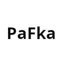

Konwerter CSV z PractiScore
PractiScore w eksporcie zawodników (CSV) zapisuje zamiast nazwy klubu jej uproszczoną wersję,
np. ardea-gdansk zamiast ARDEA Gdańsk. Wczytaj plik, a konwerter zamieni te wartości
na nazwy klubów z rejestru PZSS. Plik jest przetwarzany tylko w Twojej przeglądarce i nigdzie nie jest wysyłany.
Pobieram listę klubów z PZSS…
1. Wybierz plik CSV
2. Sprawdź wynik
Plik: ()
Wartości nierozpoznane (zostaną bez zmian)
Zwykle to opcje dopisane ręcznie w formularzu, np. „Mojego klubu nie ma na liście”.
| Wartość w CSV | Liczba |
|---|
Rozpoznane kluby
| Wartość w CSV | Nazwa klubu | Liczba |
|---|
3. Pobierz poprawiony plik
Pozostałe kolumny zostają bez zmian. Plik jest zapisany w UTF-8, więc Excel pokaże polskie znaki.